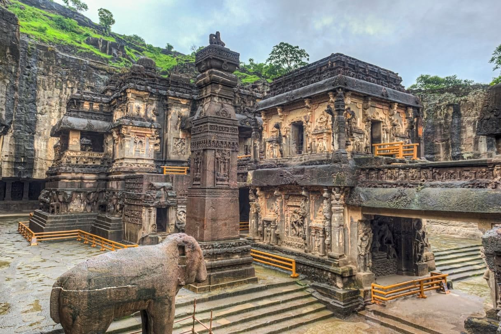
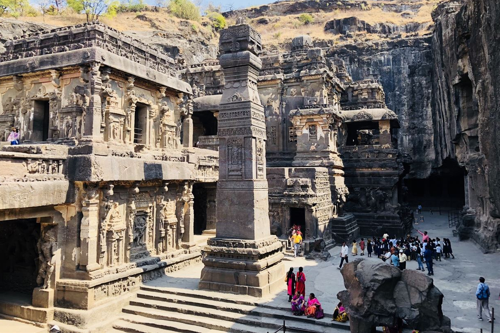
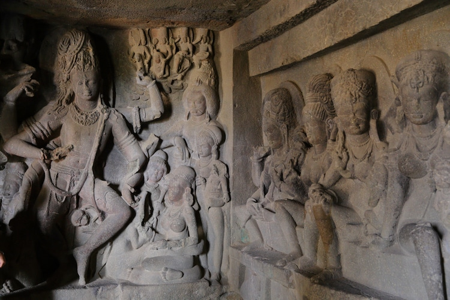

The Kailasa Temple is a cave temple located in Ellora, Maharashtra, India. It's part of the Ellora cave temples and is located in the 16th cave within the system of temples. Ellora is home to several other Buddist, Hindu, and Jain temples as well. The dimensions of the temple are 175 feet wide, 300 feet long, and over 100 feet high. Visitors are allowed to tour the area for up to two hours. They must stay on the path as to not mess with the ancient carvings and structures. Along the tour path one could see several carvings of hindu dieties and other structures like the victory pillars. The victory pillars are two twin structures near the temple entrance that signify the victories of the Rashtrakuta kingdom and glory to the hindu god, Lord Shiva.
 The Kailasa Temple was built in the 8th century by the Rashtrakuta King Krishna I. The temple is dedicated to the Hindu god Shiva and is considered one of the most remarkable cave temples in India. The temple is known for its vertical excavation, which is a rare architectural feat. Throughout the centuries, many groups have tried to tear down the temple, but none succeeded because the temple is made out of basalt rock.
The Kailasa Temple is a monolithic structure, meaning it was carved out of a single rock. The temple is carved from top to bottom, and the entire structure is covered with intricate carvings and sculptures. The temple is surrounded by a moat and is accessed through a series of steps that lead to the main entrance. The especially daunting part about this structure is that it was carved out of basalt rock which is insanely hard to carve into, even with modern techonology. It's a wonder that over a thousand years ago this structure was able to be built with less advanced tools.
According to legend, the Kailasa Temple was built to honor the Hindu diety Lord Shiva. King Krishna I had fallen very ill to an incurable disease. Queen Manikavati vowed to erect a temple in honor of Lord Shiva and fast until the top of the temple, the sikhara, was built. Once the king was better, work on the temple started. To finish the top of the temple as fast as possible, the architect who took up the challenge, Kokasa, started the carving of the rock temple from the top so the queen could end her fast within a week.